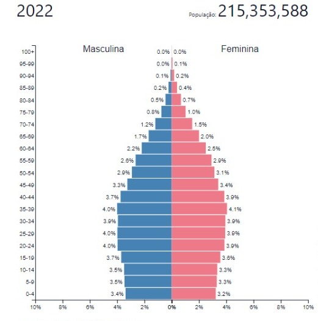
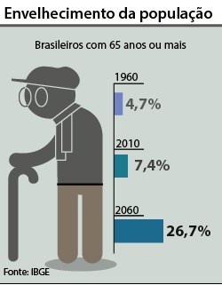

Envelhecimento da sociedade

Envelhecimento populacional
O envelhecimento populacional está maior acerca dos anos, mas quais são as razões para esse envelhecimento populacional? Quais são as consequências? Trata-se somente de um problema para o sistema previdenciário ou os efeitos vão mais adiante?
Na verdade, o envelhecimento significa uma reestruturação da pirâmide populacional (imagem 1) que possui fortes impactos para a sociedade em praticamente todas as esferas. As mudanças que levaram para esse processo foram duas: a redução da mortalidade e a diminuição da fertilidade.
A elevação da expectativa de vida, que nada mais é do que a média das idades em que as pessoas morrem, foi impulsionada principalmente pela diminuição da mortalidade infantil. No Brasil, ela caiu de 121 mortos para cada mil nascidos vivos em 1960 para 12,8 por mil em 2017, elevando a expectativa de vida de 48 anos em 1960 para 76 anos em 2017. Além da diminuição da mortalidade infantil, houve avanço na medicina de forma geral, diminuindo a mortalidade também durante a vida adulta e mantendo as pessoas vivas por mais tempo.
A diminuição da fertilidade também teve forte queda no Brasil a partir da metade do século XX, caindo de 6,2 filhos por mulher em 1960 para 1,77 em 2018. As causas dessa queda rápida são várias, com destaque para as melhores formas anticoncepcionais, bem como uma forte urbanização no período. Enquanto no meio rural filhos representavam mão de obra a mais, as crianças se tornaram na cidade um fator de custos. O resultado dessas mudanças é uma nova divisão das estruturas etárias na sociedade brasileira.
Mercado de trabalho envelhecendo
Nesse contexto de mudanças, a população idosa também se diversifica, alterando a composição etária do próprio grupo: hoje é cada vez maior o número de pessoas que alcançam a idade avançada e muito avançada, inclusive passando dos 100 anos.
Uma forma de diferenciar os idosos é a divisão em Terceira e Quarta Idades. Enquanto a Terceira Idade se refere às pessoas idosas que estão em boas condições físicas e cognitivas, muitas vezes ainda trabalhando ou aproveitando da vida, o termo Quarta Idade é usado geralmente para descrever idosos com problemas físicos e cognitivos que comprometem seriamente as atividades diárias e a autonomia. Usando estes conceitos, podemos analisar os impactos para a sociedade.
O maior número de pessoas idosas e a diminuição de jovens e adultos vão trazer consequências para o mercado de trabalho. Já pode ser observado que a força de trabalho está envelhecendo, e a falta de trabalhadores jovens pode levar à necessidade das empresas manterem os trabalhadores mais velhos, que, além de possuírem experiência, também são considerados mais confiáveis e dedicados. Por outro lado, deve-se pensar em formas de atualização para os trabalhadores mais velhos e na estruturação etária da mão de obra para aproveitar as qualidades das diferentes faixas etárias.
Outro aspecto que se refere aos idosos mais jovens é o surgimento de um novo mercado de produtos da vida cotidiana e do lazer para esse grupo populacional. O setor de turismo já oferece viagens especialmente voltadas para esse público. Apesar de as pessoas idosas no Brasil, na sua grande maioria, não disporem de tantos recursos quanto em muitos países desenvolvidos, esse grupo possui necessidades específicas que devem ser atendidas.
Com isso a população está sujeita a maior pessoas com da taxa de terceira e quarta idade do que da primeira e segunda idade pois enquanto antigamente havia muitas crianças e poucos idosos, o número de crianças diminuiu bastante em função da baixa da fertilidade e o número de idosos aumentou em função da diminuição da mortalidade durante a vida adulta.
A partir de 2030, o grupo dos idosos será maior que o grupo de crianças com até 14 anos e, em 2055, haverá mais idosos do que crianças e jovens com até 29 anos de idade. Em 2060, mais de um terço da população brasileira será constituída de pessoas com 60 anos ou mais (33,7%). Isso afeta também as estruturas familiares, com uma horizontalização da família – muitos membros na mesma geração, como irmãos e primos, mas a convivência somente de no máximo três gerações – para a verticalização da família – poucos membros da mesma geração, mas muitos membros em outras gerações, como avós, bisavós ou até tataravós.